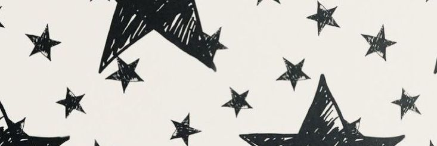

Awards & Achievements
2024
- Anugerah Pelajar Cemerlang Akademik & Kepimpinan (KMJ)
- Anugerah Pelajar PNGK 4.0 PSPM Semester I
- Kem Daie Muda Matrikulasi (KDMM) Peringkat Kebangsaan
2023
- Anugerah Sastera Johor (Puisi) Remaja Bawah 19
2022
- Anugerah Pelajar Terbaik SPM
- Peserta Minggu Penulis Remaja Peringkat Kebangsaan
- Naib Johan Cerpen Anugerah Pengkarya Muda Johor
- Johan Negeri Mengarang Sajak Karnival Bahasa Melayu
- Naib Johan Daerah Mengarang Sajak Karnival Bahasa Melayu
- Ke-3 Negeri Menulis Cerpen Karnival Bahasa Melayu
- Naib Johan Daerah Menulis Cerpen Karnival Bahasa Melayu
- Ke-5 Negeri Menulis Esei Karnival Bahasa Melayu
- Johan Menulis Esei Daarah Karnival Bahasa Melayu
- Winner of Essay Writing (Upper Form Category)
- Winner of Infographic Poster Competition
2021
- Saguhati (Cerpen) Anugerah Pengkarya Muda Johor 2021